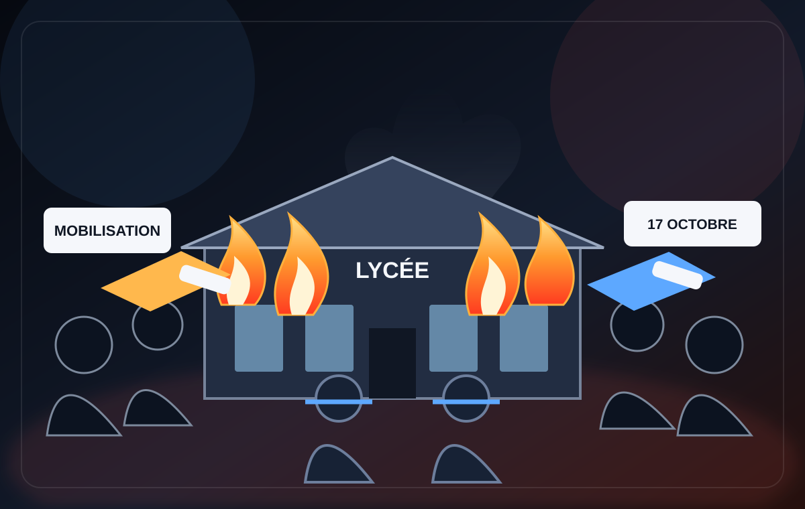

06OCT.
CONFIRMÉ
Au lycée Charles-de-Gaulle
Manifestation confirmée pour le 6 octobre 2026.
Blocus, manifestations et présence policière : retrouvez les informations disponibles sur Le Corbusier et Charles-de-Gaulle, avec les dates et le niveau de confirmation.

Informations locales du 6 octobre 2026 · confirmées
Manifestation confirmée pour le 6 octobre 2026.
Manifestation confirmée pour le 6 octobre 2026.
29 septembre et 1 octobre 2026
Blocus signalé devant le Corbusier.
Blocus signalé devant le Corbusier.
Blocus signalé devant Charles-de-Gaulle. Aucun blocus n'est renseigné ici pour le mardi 29 septembre.
Illustration fictive, pas une photo d'actualité.